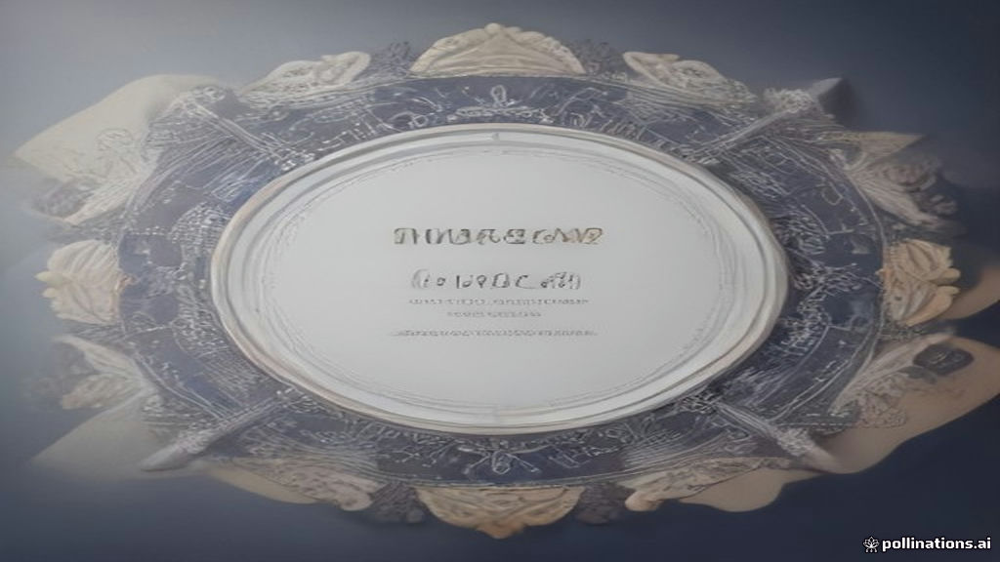

Your IPO Just Got a 'Big Investor' Stamp of Approval: Understanding Anchor Investors
TL;DR
- Anchor investors are big institutional players like mutual funds or insurance companies who invest in an IPO a day before it opens to the public.
- They commit large sums, typically ₹10 crore or more for mainboard IPOs, to show confidence in the company.
- Their early investment helps set the tone for the IPO and assures other investors.
- To ensure commitment, their shares are locked in for two periods: 50% for 30 days and the rest for 90 days.
- SEBI introduced this concept to bring stability and better price discovery to new share offerings.
What's this about?
When a company decides to offer its shares to the public for the very first time through an Initial Public Offering (IPO), it often seeks the backing of "anchor investors." These are large, well-known institutional investors – think big mutual funds, insurance companies, or foreign portfolio investors – who agree to buy a significant chunk of shares even before the IPO officially opens for everyone else. Their participation is like a vote of confidence, signaling to the broader market that the company's shares are worth considering.
Why it's in the news right now
IPOs are a constant buzz in the Indian market, with several companies, both big and small, launching their public issues. Recently, large IPOs like Jio Platforms, which closed its public subscription in late October 2026, had significant anchor investor participation. The lock-in period for the first half of the shares allotted to anchor investors in such recent IPOs is ending around late November 2026, bringing their role and the associated rules back into focus. Furthermore, SEBI's updated rules for anchor investors, especially concerning their lock-in periods, came into effect from April 2022 and were further refined around November 2025, ensuring continued relevance of this topic.
How it actually works
- Who are they? Anchor investors are a special category of Qualified Institutional Buyers (QIBs). These include entities like mutual funds, insurance companies, pension funds, and foreign portfolio investors (FPIs) who have the expertise and capital to conduct thorough research on a company.
- Early Bird Investment: One business day before the IPO formally opens for public subscription, anchor investors place their bids for shares. This early bidding happens within the price band set by the company.
- Minimum Investment: To qualify as an anchor investor, they must commit a substantial amount. For a mainboard IPO (larger companies), the minimum investment is ₹10 crore, while for an SME IPO (smaller companies), it's ₹2 crore.
- Allocation: A portion of the IPO, specifically carved out from the QIB category, is reserved for anchor investors. This can be up to 60% of the QIB portion. To encourage domestic participation, one-third (33.33%) of this anchor portion is reserved for domestic mutual funds.
- Price Discovery & Allotment: Their large bids help in the "price discovery" process, which means finding a fair price for the shares. The shares are allotted to them at a fixed price. If the final IPO price (decided after public bidding) is higher than the anchor price, the anchor investor pays the difference. If it's lower, they don't get a refund and still pay their original, higher anchor price.
- Lock-in Period: To ensure they remain committed and don't just sell off shares immediately after listing, SEBI mandates a lock-in period. Currently, 50% of the shares allotted to anchor investors are locked in for 30 days from the date of allotment, and the remaining 50% are locked in for 90 days. This dual lock-in was introduced to reduce volatility after listing.
- Transparency: The names of the anchor investors and the number of shares allotted to them are publicly disclosed before the IPO opens for general subscription, adding transparency to the process.
A simple way to think about it
Imagine a grand new restaurant opening in your neighbourhood. Before it opens its doors to everyone, the owners invite a few well-known food critics, influential chefs, or popular food bloggers for a special preview. These "anchor guests" try the food, give their stamp of approval, and their positive reviews then encourage many other people to visit the restaurant once it's open. The restaurant owners might even offer these anchor guests a special commitment to come back, ensuring the restaurant has a steady flow of customers in its initial days. Similarly, anchor investors are the "influential guests" who give an IPO its initial credibility and stability, encouraging other investors to participate.
Why it matters to you
- Confidence Booster: When you see reputable anchor investors participating in an IPO, it often signals that experienced professionals have done their homework and found the company promising. This can give you more confidence when considering investing in that IPO.
- Price Stability: The presence of large, committed anchor investors helps stabilize the IPO's pricing and can reduce wild swings in the share price immediately after listing.
- Demand Indicator: Strong demand from anchor investors can indicate a healthy interest in the IPO, which might lead to better performance on listing day.
- Informed Decision-Making: The public disclosure of anchor investors allows you to see who is backing the company, helping you make a more informed decision about your investment.
- Market Sentiment: Anchor investor activity often reflects broader market sentiment towards new listings. High subscription in the anchor portion can suggest a positive outlook.
Common confusions cleared up
- Myth: Anchor investors get shares at a much cheaper price than others.
- Myth: Anchor investors are just like any other institutional investor (QIB).
- Myth: If anchor investors invest, the IPO is guaranteed to be a success.
* Fact: While they bid early, the price they pay is within the IPO's price band. If the final IPO price is higher, they pay the higher price. If it's lower, they don't get a refund, meaning they effectively pay the higher of the two prices.
Fact: Anchor investors are a subset* of QIBs. The key difference is their early participation (a day before public opening) and the mandatory lock-in period for their shares, which doesn't apply to general QIBs or retail investors.
* Fact: While anchor investor participation is a positive signal and builds credibility, it is not a guarantee of future performance or listing gains. All investments carry risks, and thorough personal research is always essential.
FAQ
Who can be an anchor investor?
Only Qualified Institutional Buyers (QIBs) as defined by SEBI are eligible to be anchor investors. This includes entities like mutual funds, insurance companies, foreign portfolio investors (FPIs), and large banks.
What is the minimum amount an anchor investor must invest?
For a mainboard IPO, an anchor investor must invest a minimum of ₹10 crore. For SME IPOs, the minimum is ₹2 crore.
When do anchor investors get their shares?
Anchor investors are allotted shares one business day before the IPO opens for public subscription.
What is the lock-in period for anchor investors?
Currently, 50% of the shares allotted to anchor investors are locked in for 30 days from the allotment date, and the remaining 50% are locked in for 90 days.
How does anchor investor participation help in price discovery?
Their large, early bids within the price band provide an initial demand signal, helping the company and merchant bankers gauge investor interest and arrive at a fair final issue price for the IPO.
Sources
- https://www.sharekhan.com/sharekhan-education/anchor-investors-in-ipo-explained/
- https://www.bajajfinserv.in/invest/initial-public-offering-ipo/anchor-investor-meaning-role-and-sebi-rules
- https://www.flattrade.in/learn/anchor-investors-in-ipos-role-and-lock-in
- https://groww.in/blog/anchor-investors-in-ipo
- https://www.dhanvantree.com/anchor-investor-in-ipo-meaning-sebi-rules-lock-in/
- https://www.rupeezy.in/blog/anchor-investor-explained
- https://www.ipoplatform.in/anchor-investor-in-ipo
- https://www.angelone.in/assist/upcoming-ipos-in-india
- https://www.chittorgarh.com/ipo/anchor-investors-allotment/100/
- https://www.groww.in/ipo/jio-platforms-ipo
- https://www.pickmywork.com/blog/upcoming-ipos-in-november-2026-calendar
- https://www.investor.gov/introduction-investing/investing-basics/glossary/qualified-institutional-buyer-qib (General definition of QIB, not India specific but relevant for context)